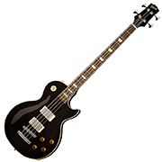

Cars: 67 Shelby Mustang GT500 Convertible
1967 Shelby Mustang GT500 Convertible, also known as Eleanor
, is my favorite Shelby Mustang and my dream car.
One day, I would really like to rebuild or restore this car!
Sports: Snowboarding
I am into extreme sports and motor racing (partly because I suck at ball games). Among different extreme sports, my favorite is snowbording. Before I get too old, I would to be able to do snowboard trick like my favorite snowborder, Travis Rice.
Music: Funk & Punk Rock

Friedrich Nietzsche (German philologist, philosopher, cultural critic, poet and composer) once said Without music, life would be a mistake
.
I think, I cannot live without music. My favorite genre is funk and punk rock.
Did you know that I used to play Bass guitar in a band during in my 20s? Our band mostly played punk rocks (original + several covers) in small gigs. Now, it's a bit difficult to spare time and play Bass and, unfortunately, I also had to sell my Bass when I was leaving Paris. But, in 2014, I would like to get a new Bass and play it on my spare time.